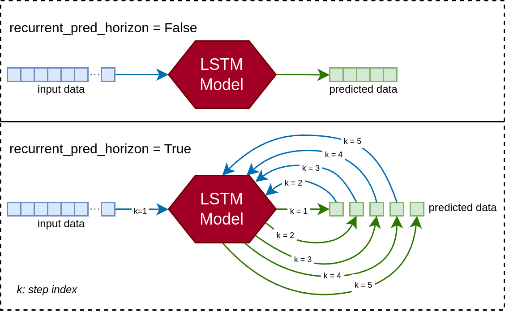
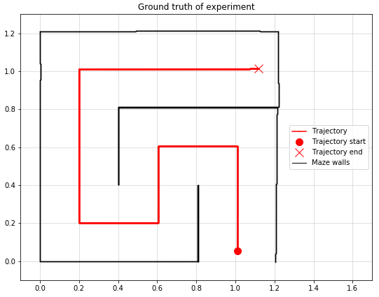

Jan Xu

Jan Xu's website, home to my personal projects, blog posts and whatnot.
Projects

Stock Market Prediction
This project is a mix of learning time-series ML, testing out my new GPU, and maybe making some money with minimal effort. I aim to predict future stock prices using historical data with an LSTM-based model...

2D LiDAR/INS SLAM with extended Kalman filter
The aim of this project was to implement SLAM algorithms by fusing odometry and pose data from an IMU with range data from a LiDAR device. A real-life experimental setup was constructed such that the sensor data is collected under conditions reflecting ground truth as close as possible...
Autoencoders
Various autoencoders with ResNet, DenseNet and U-Net implementations, as well as VAE and GAN implementations...